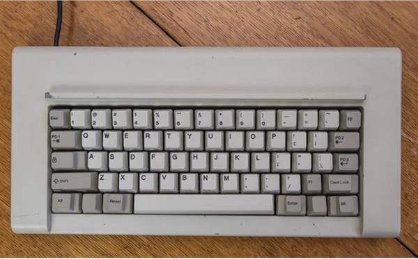
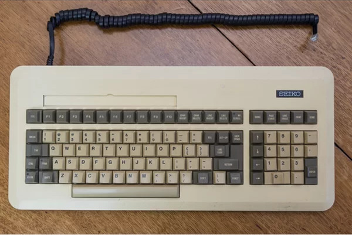
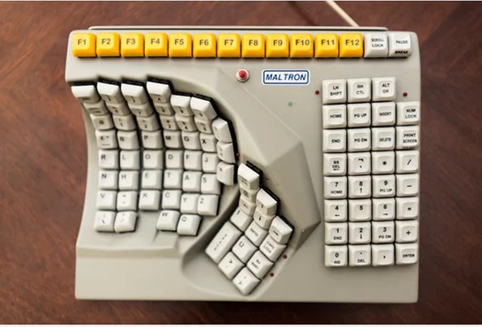
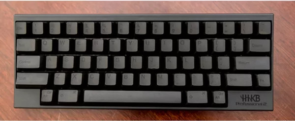
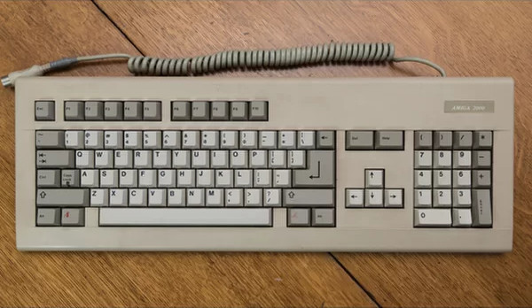

The Little Switches
Everyone wanted a slice of the pie!
1976 - Alps SCB1A163
 The Alps SCB1A163 was used on the first computer that was made on the UCLA campus. It was later sold with the Apple I Personal Computer. The keyboard uses a contactless technology that is rated for hundreds of millions of presses. It was very, very, durable and gives meaning to the term "Mechanical Keyboard".
The Alps SCB1A163 was used on the first computer that was made on the UCLA campus. It was later sold with the Apple I Personal Computer. The keyboard uses a contactless technology that is rated for hundreds of millions of presses. It was very, very, durable and gives meaning to the term "Mechanical Keyboard".
1981 - IBM 4704 Model 200
Also known as the Model F, the IBM Keyboard is legendary within the mechanical keyboard community and is still used today. The Model F uses the famous Buckling Spring Keyswitch that is known for it's loud and resposive nature. Many people born in the 90s and before know it as their first keyboard whether they have know it or not simply because of it's popularity. Vintage IBM Keyboards can be priced at $150 used and up.
1982 - Seikosha 8620
Made by Seiko-Epson, the Seikosha 8620 is made with rubber-dome technology. These rubber-domes aren't just the switches that are in the $10 keyboards that come with many retail PC's today, they are Topre Rubber-Dome Switches. This means they are still very high-end, but this is the technology that eventually brought the world cheap keyboards. Although the technology was cheap and still good, the keyswitches didn't last nearly as long as the mechanical switches seen on other past keyboards.
1970s and Beyond - Maltron
 Designed and built in the 70s, The Maltron Keyboard by Maltron was the first keyboard with designed with ergonomics in mind. It used proprietary mechanical switches similar to the IBM's buckle spring technology and the chassis of the keyboard used keywells in order to be more aligned to the user's natural position. The layout is also different on the keyboard show to the right because it was the first to made for one hand use. They also have a two handed and other designs made for handicapped users. The company still manufactures keyboards today.
1970s and Beyond - Happy Hacking Keyboard(HHKB)
Designed by Eiiti Wada and manufactured by Realforce, the HHKB was designed so that it could be used with any computer. Prior to this, there were compatibility issues and users weren't able to use any keyboard with any computer, the HHKB Sought to fix that. The keyboard uses Topre keyswitches and a 60% layout rather than a standard full-size 108 key layout.The HHKB is still sold today and costs between $250-$330.
1990s - Amiga A2000 Cherry Keyboard
The Amiga A2000 made the Cherry company famous. It was the first keyboard to begin using the still popular MX-Style Switches. Cherry cut corners when they designed the keyboard because they put the rest of their money into the design and quality control of their MX Switch. The keyboard came with the Commodore Amiga 2000 personal computer and was widely popular everywhere.